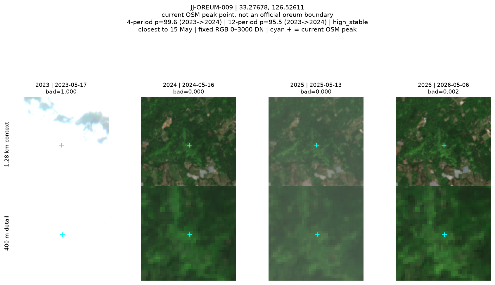
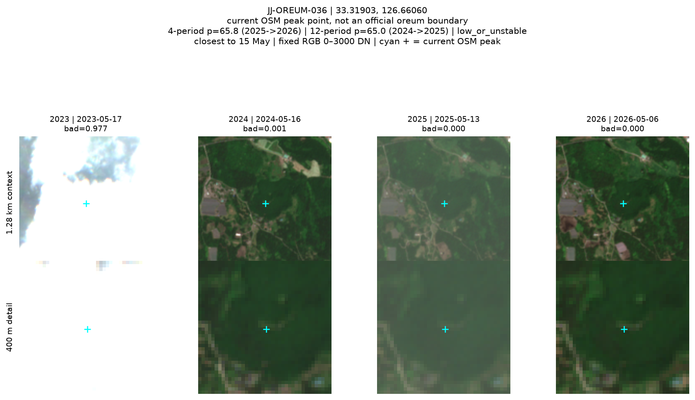
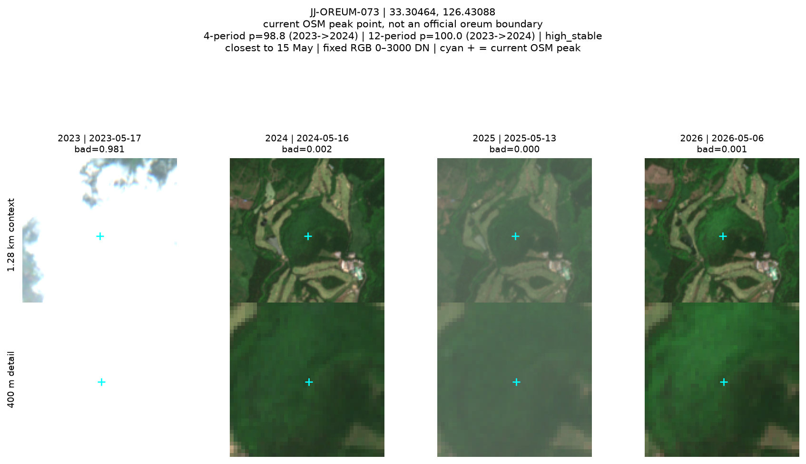
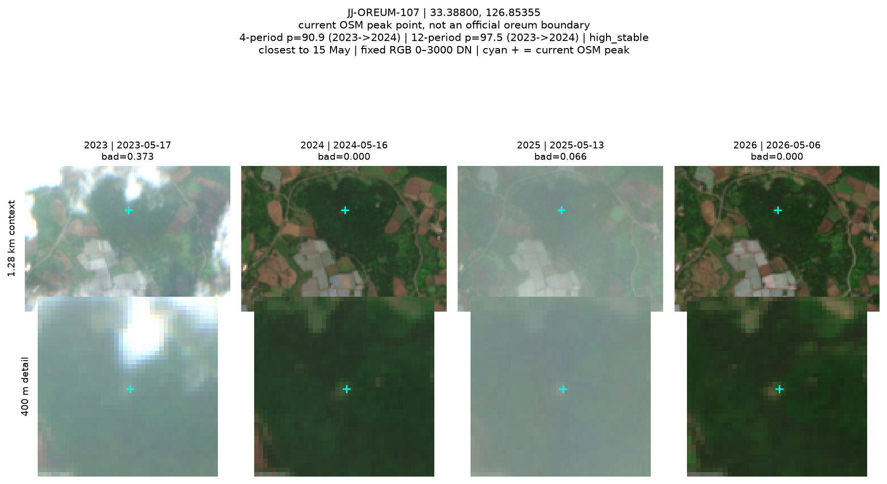
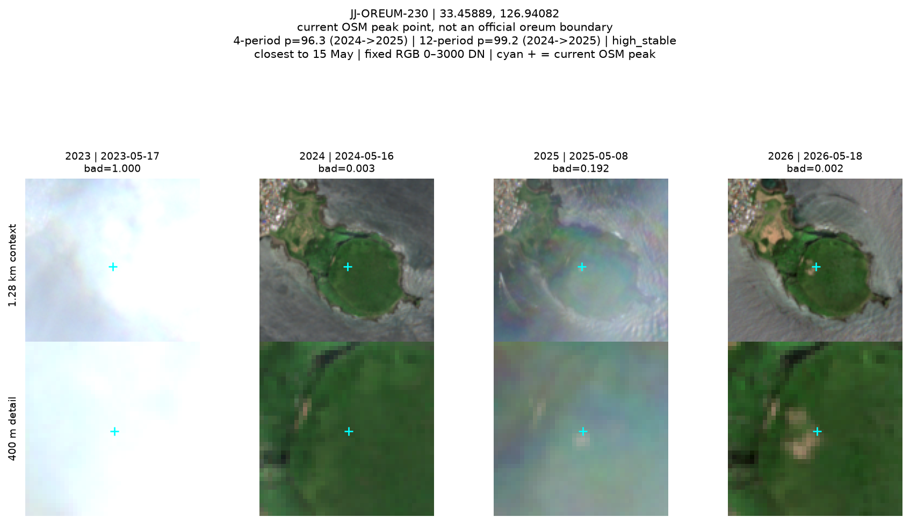
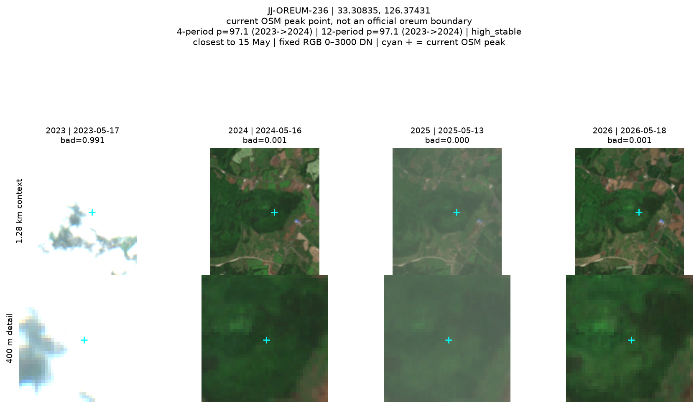
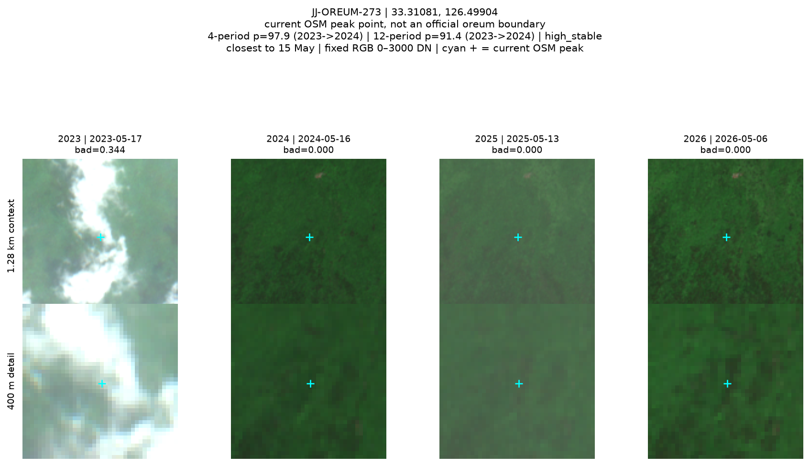
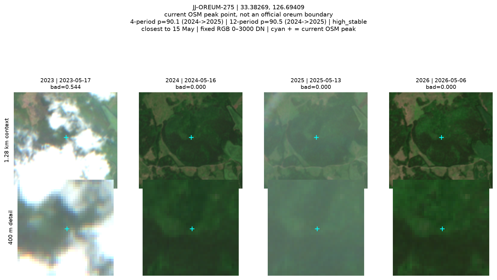
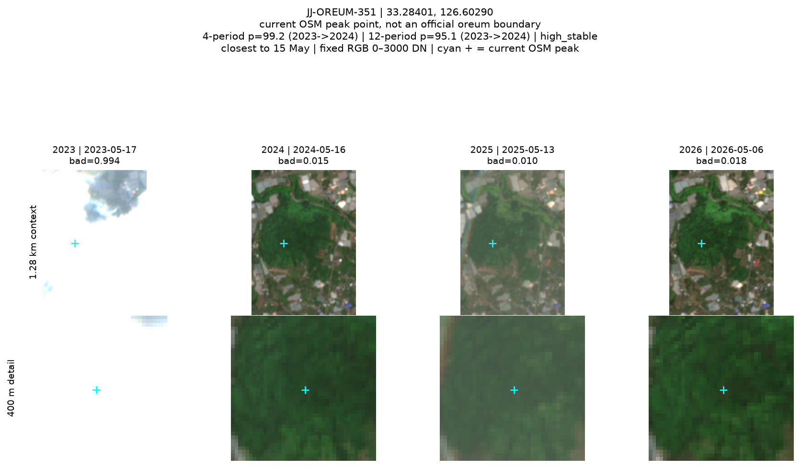

각시바위 JJ-OREUM-009
제주특별자치도 서귀포시 호근동 2112
4기간 99.6 · 12기간 95.5 · high_stable
9개 조사 우선 후보만 표시합니다. 각 연도 5월 15일 최근접 관측과 고정 0–3000 DN stretch이며 OSM point는 공식 경계가 아닙니다.

제주특별자치도 서귀포시 호근동 2112
4기간 99.6 · 12기간 95.5 · high_stable

제주특별자치도 서귀포시 남원읍 한남리 산16
4기간 65.8 · 12기간 65.0 · low_or_unstable

제주특별자치도 서귀포시 중문동 산5
4기간 98.8 · 12기간 100.0 · high_stable

제주특별자치도 서귀포시 성산읍 신산리 1785
4기간 90.9 · 12기간 97.5 · high_stable

제주특별자치도 서귀포시 성산읍 성산리 1
4기간 96.3 · 12기간 99.2 · high_stable

제주특별자치도 서귀포시 안덕면 상창리 산2-1
4기간 97.1 · 12기간 97.1 · high_stable

제주특별자치도 서귀포시 도순동 산1
4기간 97.9 · 12기간 91.4 · high_stable

제주특별자치도 서귀포시 표선면 가시리 산145
4기간 90.1 · 12기간 90.5 · high_stable

제주특별자치도 서귀포시 상효동 2308-1
4기간 99.2 · 12기간 95.1 · high_stable